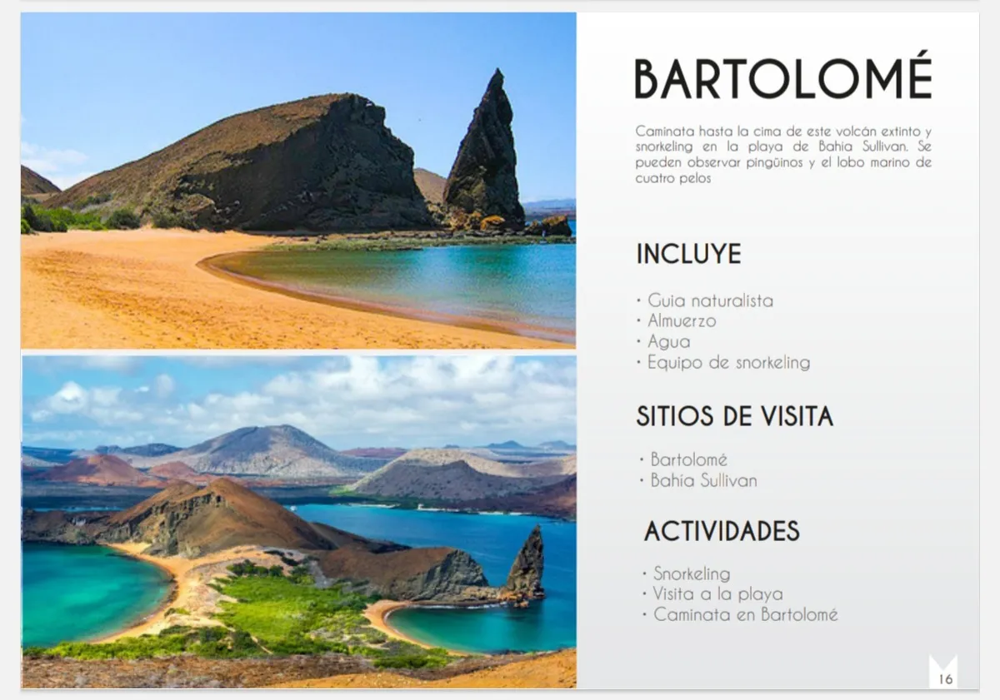
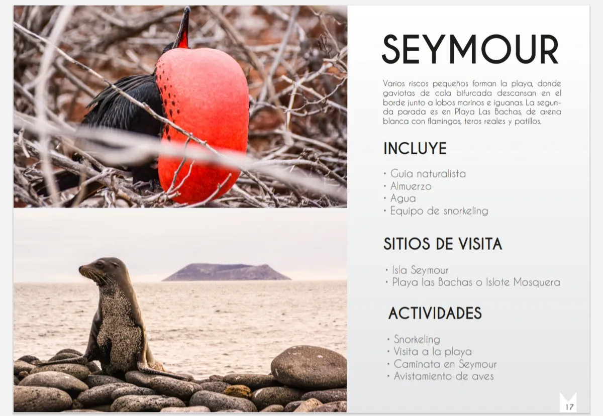

Paquetes a Galápagos, cruceros y tours diarios desde Santa Cruz
Bienvenido a Galapagos RedTipShark Agency. Organizamos paquetes a Galápagos, cruceros y tours diarios desde Santa Cruz para familias y viajeros que buscan experiencias auténticas. Compara rutas de caminata y snorkeling, revisa disponibilidad por isla y reserva tu salida 2026 con guías certificados.
Principales Tours



Guías para planificar tu viaje 2026
Antes de reservar, revisa nuestras guías con preguntas frecuentes sobre equipaje, presupuesto y regulaciones del Parque Nacional Galápagos.